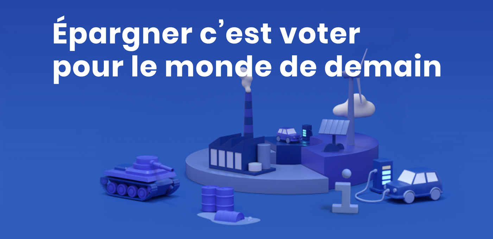
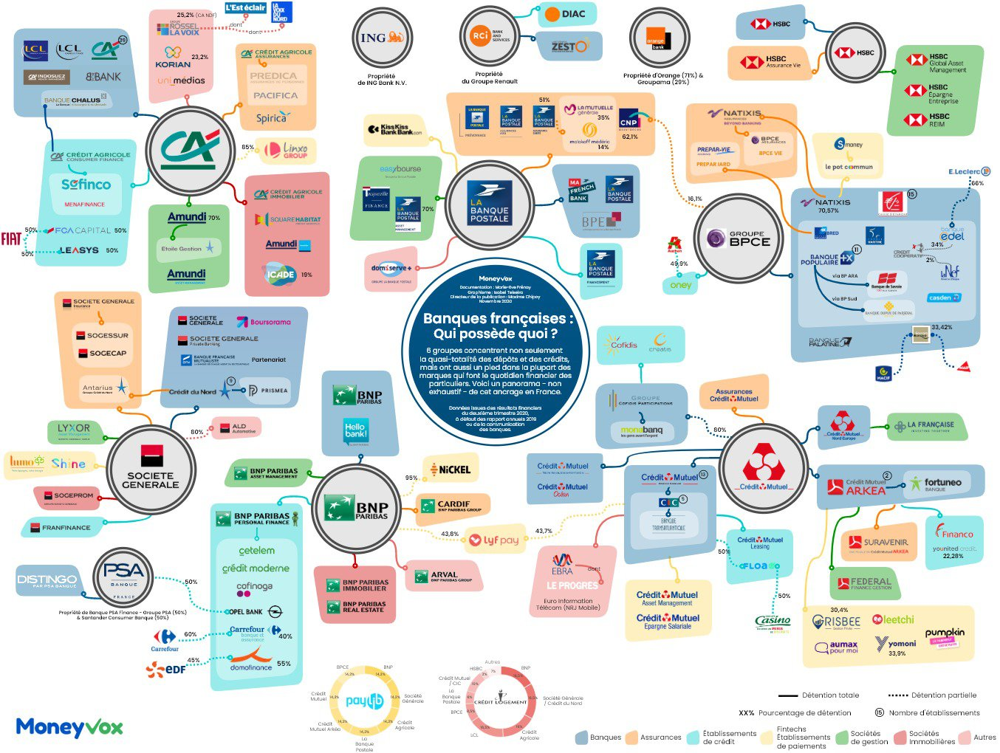

Quel est l'impact de mon argent ?
Ce qu'il manquait au simulateur de l'accueil, c'est l'impact de l'argent qui est sur vos comptes, et celui-ci peut être très important.
Rift est une application mobile qui scanne l’impact sociétal et environnemental de vos comptes courants, livrets et assurances-vie pour vous permettre de façonner une épargne à votre image, et vous donne l'empreinte carbone de votre argent (en CO2e engendrées par an ou en vol Paris-New York) et plein d'autres infos. Cette appli étant récente, certaines informations sont pour l'instant approximatives.
Sinon rapidement en plus simple et moins complet, vous avez ce simulateur de Oxfam en ligne.
Quelles banques choisir ? Dans quoi/où investir ?
Le choix de votre banque a un énorme impact (En 2018, les émissions de gaz à effet de serre des grandes banques françaises ont atteint plus de 2 milliards de tonnes équivalent CO2, soit 4,5 fois les émissions de la France cette même année. BNP Paribas, Crédit Agricole et Société Générale ont chacune une empreinte carbone supérieure à celle du territoire français.), faisable par tout le monde (sauf à voir si emprunt pour le compte courant, mais c'est possible, n'hésitez pas à demander à votre futur banque + éthique) et demandant peu d'investissement (changer de banque est facile et gratuit : vous pouvez demander à votre nouvelle banque de s'occuper du changement de domiciliation des prélèvements et virements, et une fois que c'est fait on est tranquille).
Vous trouverez plus bas un classement des Amis de la Terre , cliquez sur votre banque vous serez surpris. Si votre banque n'y est pas, vous la trouverez peut-être sur change-de-banque.org, ou sur l'image ci-dessous, ou encore cherchez à quel groupe elle appartient, il y a des chances qu'elle appartienne à une des banques du classement.

Le site ( http://financeresponsable.org ) dont est tiré le classement ci-dessous n'existe plus mais l'ordre du classement reste d'actualité, et il reste intéressant ne serait-ce que pour voir les projets financés par certaines banques et leurs conséquences.
Pour un site plus récent vous avez change-de-banque.org.
| Banques Françaises |
Risques climatiques et sociaux |
|---|---|
| La Nef | Impacts minimes |
| Crédit Coopératif | |
| Banque Postale | Risques modérés à risques importants |
| Crédit Mutuel - CIC - Mona Banq - Fortuneo | |
| Banque Populaire | |
| Caisse d'Epargne | |
| Société Générale - Crédit du Nord - Boursorama | Risques maximum |
| Crédit Agricole - LCL - BforBank | |
| BNP Paribas - Hello bank! - Nickel |
💰 Epargne
⏱ 20 min
La NEF.
C'est l’établissement financier au plus faible impact carbone en France, mais pour l'instant ils ne possèdent pas l’agrément leur permettant de proposer des comptes courants aux particuliers.
Le plus important si vous avez de l'argent de côté (même si vous n'en avez pas, ouvrir un compte augmente le poids en termes de client, c'est à partir de 10€) et/ou si vous êtes frileux à l'idée de changer de banque, c'est de mettre votre épargne à un endroit où il sera bien utilisé; la NEF. C'est facile, rapide (20 minutes pour la souscription, 3 semaines pour l'ouverture), sans risque, gratuit et l'épargne est disponible à tout moment.
La NEF est transparente (chaque année, la liste intégrale et détaillée des prêts débloqués est publié), écologique et coopérative (1 personne = 1 voix).
Acquérir aussi des parts sociales de la Nef constitue un placement engagé qui lui permet d’augmenter ses capacités de financement mais aussi de grandir et d’enrichir son offre de services en direction des particuliers (possibilité d'avoir un compte courant).
💳 Compte courant
⏱ 10 min
Le crédit coopératif.
En attendant que la NEF puisse proposer un compte courant, c'est le choix le + éthique. (+ d'infos sur ce PDF des Amis de la Terre)
Même si vous avez peu d'argent, il est pertinent de changer de banque; chaque euro compte, et chaque client légitime l'existence d'une banque.
10 minutes pour la souscription, 10 jours pour l'ouverture.
💼 Compte pro
⏱ 20 min
Le compte courant Nef Pro.
Pour les mêmes raisons qu'évoquées au-dessus au paragraphe "Epargne".
📈 Investir
⏱ de 5 à 40 min
LITA.co (⏱ 40 min) (ex 1001pact) est un groupe européen créé en 2014 organisant des levées de fonds pour des entreprises qui justifient d’un impact social ou environnemental.
Entreprise de l’économie sociale et solidaire, elle est labellisée entreprise solidaire d’utilité sociale.
En + de l'aspect éthique, vous pouvez profiter de différents avantages financiers, comme la perception d'intérêts (jusqu'à 8%), des réductions d'impôt, etc...
Je vous partage mon code parrain ( GZAKD ), il vous permet de bénéficier de 20€ sur votre premier investissement (et pareil pour moi).
Énergie partagée (⏱ 5 min) est un mouvement français de promotion, d'accompagnement et de financement de projets de production d'énergie renouvelable dont le financement et la gouvernance sont maîtrisées par des collectivités territoriales et des collectifs citoyens.